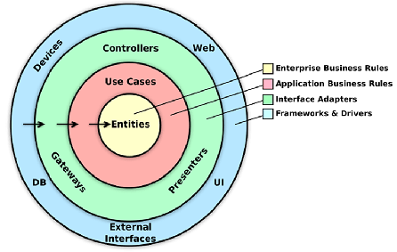
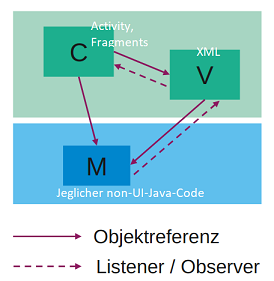
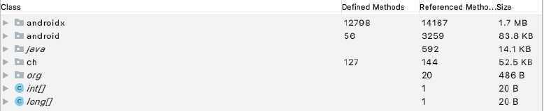
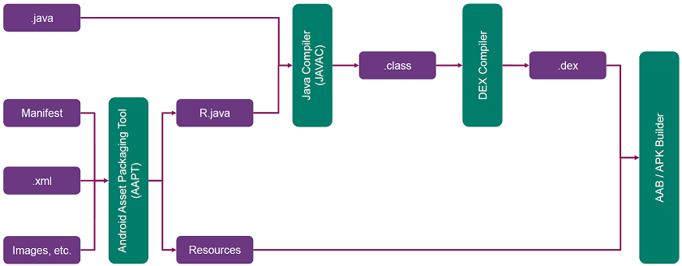
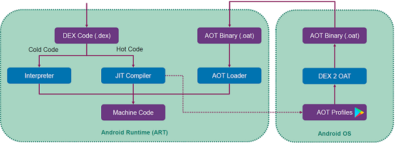

Android Architektur und Fortgeschrittenes
Software-Architektur
Zerlegung grösserer Systeme in Teile verbessert Wartbarkeit und Verständlichkeit. Schichten gruppieren zusammengehörige Konzepte. Keine Zyklen wenn Abhängigkeiten nur nach unten zeigen. Presentation-Schicht beinhaltet Darstellung und Benutzerinteraktion, stark an UI-Tools gebunden. Domain-Schicht beinhaltet Businesslogik und Domänenklassen. Keine UI Funktionalität, einfach zu testen. Wenig externe Abhängigkeiten. Datenschicht dient der Speicherung, Bereitstellung von Daten. Auch Persistenz oder Datenhaltung genannt. Variationen: Mehr als 3 Schichten, zusätzlich vertikale Zerlegung nach Feature, Presentation Patterns (MVC, MVP, MVVM)

Fundament der Software soll nicht Daten sein, sondern Domäne. In der neueren (Clean Code-) Ringarchitektur ist auch die Datenbank in der äussersten Schicht, ändert also potenziell oft. Je weiter innen, desto stabiler. "Technische Details" sind aussen. Domäne bildet den Kern.

Ziele in MGE: UI Code gruppieren, von restlichem Code trennen und bestmöglich testbar machen.
Observer Pattern
Dient der "Rückmeldung" von Domain zu Presentation bei
Änderungen an den Daten. Subject/Observable: Das Ding, das ändern kann, also innerhalb der Domäne. Bietet Attach()/Detach()-Funktionen. Eine Notify() Funktion führt Update() auf allen registrierten Observern
(GUI-Elementen) aus. Ergo: Observer kennt Subject, umgekehrt nicht. Wichtig: Anmelden wenn die App sichtbar ist (onResume), abmelden wenn die App im Hintergrund ist (onPause). Ansonsten werden unnötige Ressourcen verschwendet, GUI
aktualisiert das nicht sichtbar ist.

Grundlegend "manuelle" Implementation für jedes Objekt, komplex und aufwändig. Wer observiert Wen? An-/Abmelden korrekt überall? Vereinfachte, allgemeine Implementation nötig...
Grundlagen Architektur
 

Model View Controller: Basis (lose) für Android. Kritik: Controller (Activity/Fragments) wird schnell extrem umfangreich und schwierig zu testen wegen Referenzen auf UI. Model View Presenter: Keine Verbindung zwischen View und Model. Model View ViewModel: Siehe Woche 7.
Android: Application
Wird im AndroidManifest als <application>
- Knoten definiert. Instanz wird beim Start der App erstellt - lebt
solange die App läuft. Aufbau nach Standard oder selber definiert
als abgeleitete Klasse. Kann verwendet werden für einmalige
Initialisierungen, erzeugen von Singleton Objekten, Zugriff / Halten
von globalen Objekten etc. Hat verschiedene Lifecycle-Methoden wie
onCreate, onTerminate (wird NIE aufgerufen),
onConfigurationChanged(newConfig)
bei Änderungen der System-Konfig wie Sprache, Rotation des Geräts,
onLowMemory
bei Speicherknappheit, Hinweis auf mögliche Terminierung der App,
onTrimMemory(level)
in geeigneten Momente für Aufräumaktion, Parameter gibt Hinweis auf
Auslöser.
xxxxxxxxxx<application android:name=".MyApplication"> <!-- Unsere Activities etc.. --> </application>
Application.ActivityLifecycleCallbacks
ist ein Interface, dass implementiert werden kann um von allen
Activities die Lifecycle-Events zentral verwalten zu können. Bietet
überschreibbare Methoden wie onActivityCreated()
mit der auslösenden Activity im Parameter. Gut für zentrales Logging
etc.
xxxxxxxxxxpublic class MyApplication extends Application implements Application.ActivityLifecycleCallbacks{ public void onCreate() { super.onCreate(); registerActivityLifecycleCallbacks(this); // Wichtig! } public void onActivityCreated(Activity activity) { /* ... */ }}Context
Abstrakte SDK Klasse mit vielen (50+) Ableitungen. Ermöglicht den Zugriff auf Dienste und Ressourcen der App. Verschiedene Ableitungen haben verschiedene Möglichkeiten. Activity hat andere "Berechtigungen" als Application. Lebensdauer des Context hängt vom aufrufenden Objekt ab, angeforderte Ressourcen werden wiederum mit dem zugehörigen Context freigegeben. Vorsicht beim Weitergeben von Context zwischen verschiedenen Activities etc..

Brodacasts
Sind normale Intent-Objekte, Action
im Intent definiert den Typ als string mit globaler Namensgebung.
Deshalb idealerweise package-Name einbauen. Parameter sind als
Intent-Extras möglich. 2 Varianten für Broadcasts:
Global: Austausch von Meldungen zwischen Apps. Datenquelle meist Android (auch eigene App möglich). Empfänger verschiedene Apps, die sich registrieren. Beispiel: Netzwerkverbindung verloren, SMS empfangen, ...
Lokal: Innerhalb App. Bsp. zum Senden von Benachrichtigung, die via
Android OS wieder zurück kommt und von einer komplett separaten
Komponente verarbeitet werden kann. Für App-Lokale Nachrichten gibt
es einen LocalBroadcastManager.
Wichtig: keinen sensitiven Daten übermitteln, App-ID integrieren.
Ableiten von Basisklasse Broadcast, Registrieren der Klasse auf
bestimmte Nachrichten. Alt: im Manifest registriert, nur noch
eingeschränkt möglich. Neu dynamisch im Code mit Context.registerReceiver().
Services
Threads entkoppeln Aufgaben vom UI, Services entkoppeln Aufgaben
von einer Activity / der App: Ausführen von Aktionen im Hintergrund,
Lebenszyklus unabhängig. Wird auch mittels Intent gestartet.
Started Services
haben eine klar definierte Lebensdauer, gedacht für einmalige
Aufgaben (bsp. Download: klares Ende). UI nur innerhalb einer
Notification (Foreground) oder gar keines (Background). Werden
etweder durch Service selber stopSelf, eine Applikation service.stopService oder durch Android beendet. Varianten: IntentService und JobIntentService
für Ausführung einer Aktion im BackgroundThread und automatischer
Stopp. onStartCommand
hat einen Rückgabewert für verschiedene Arten von gewünschten
Neustarts:
START_NOT_STICKY: Automatischer Neustart nur bei unverarbeiteten Intents
START_STICKY: Automatischer Neustart mit nächstem anstehenden Intent oder null START_REDELIVER_INTENT: Automatischer Neustart mit zuletzt verarbeitetem Intent.
Bound Services
leben so lange, wie sie verwendet werden (Musikplayer). Nach letztem
Disconnect wird der Service gestoppt. Können von verschiedenen Apps
oder Activities gesteuert werden. onBound/onUnbound
bei Verbindung von einer Activity. Ähnlich Client/Server
Kommunikation. Registrierung der verwendeten Services im Manifest
zwingend.
xxxxxxxxxx<service android:name=".services.MyStartedService" android:exported="false" />Deployment
Installation von Apps aus .apk
Dateien. Dies sind Zip-Archive, können über beliebige Kanäle
verteilt werden und enthalten alle zur Ausführung nötigen Daten. .apk
aus dem Play Store sind von Google signiert, alle anderen gelten als
unbekannte bzw. unsichere Apps. Privater Schlüssel als Developer gut
aufbewahren, für Updates im Store zwingend nötig.
Bundeln von verschiedenen .apk in ein .aab (Android App Bundle, Nachfolger von .apk) möglich. Beispiel verschiedene Versionen (x86/x64) der App. Aus
dem .aab
wird auf den Google Servern bei Download dynamisch das passende .apk
generiert (Sprache, CPU, ...). Optimiert die Dateigrösse, bietet
verschiedene Delivery Kanäle für Features oder Assets. Vorteil, der Signaturschlüssel liegt bei Google - Nachteil, der
Signaturschlüssel liegt bei Google.. aab-Format ist zwingend seit 2021.
Grössenbeschränkung: Google Play Store setzt zum Schutz der Infrastruktur ein Limit
bei 100 MB für APK / 150MB für AAB.. Möglichkeiten daran vorbei sind
APK Splitting (nach verschiedenen Kriterien wie CPU, Gerätetyp.. )
oder APK Expansion Files für grosse Ressourcen wie Videos o.ä.
Erlaubt max. 2x 2GB zusätzlich, als .oob
Dateien oder "Play Asset Delivery" als Alternative.
Inhalt eines APK Files (APK Analyzer in Android Studio):
DEX Format: Optimierte Bytecode-Sprache für Mobile-CPUs. Inhalt classes.dex:

Android Build System
Java Virtual Machine wandelt Bytecode in Maschinencode um. Cold
Code wird bei jeder Ausführung interpretiert, Hot Code wird vom
JIT-Compiler vorkompiliert und steht direkt als Maschinencode zur
Verfügung. Das Android Asset Packaging Tool erzeugt R.java Klasse sowie alle möglichen Ressourcen.

DEX-Compiler: DEX Code ist optimiert für die Ausführung auf Smartphones / mobile CPUs. Ausführung von DEX: früher ganz "Java-Normal", via Android JVM (Name Dalvik).

Android Runtime ART 1.0: Ab Android 5.0 wird das Interpretieren/Kompilieren während der
Installation gemacht - Speicherplatz gegenüber Rechenzeit. Neues
File-Format .oat
(Ahead Of Time-Binaries). Grosser Nachteil: Umwandlung DEX auf AOT
während Installation, nach Systemupdates von Android,
"Optimizing App 1/x"-Screen.

ART 2.0: Vom JIT-Compiler wird an Android OS gemeldet, welcher Code Hot-Code ist. Resultierendes AOT-Profile wird verwendet, um Umwandlung von DEX in AOT zu machen. Effizienz-steigerung geschieht also stetig, nach der App-Installation. AOT-Profile können schlussendlich via Google Play Store verteilt werden.
